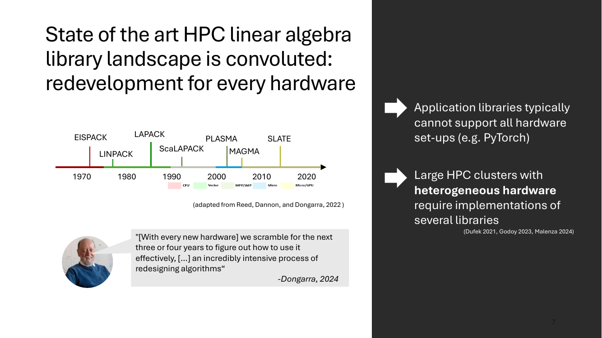
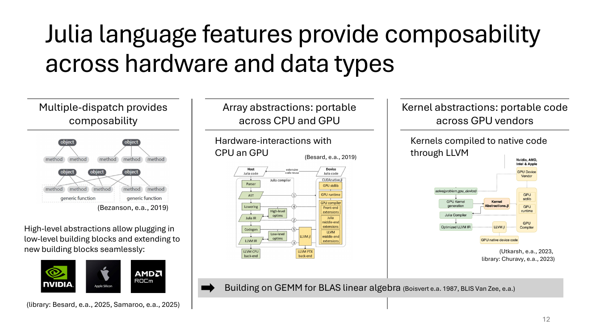
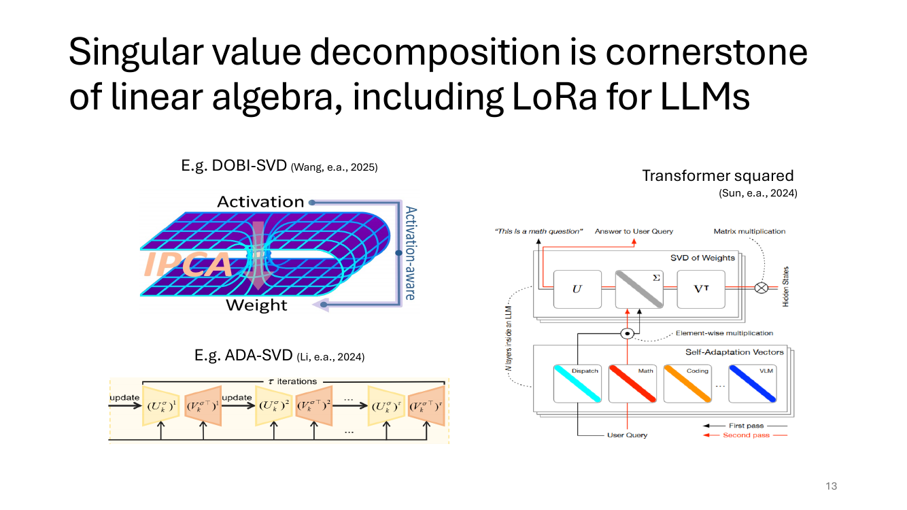
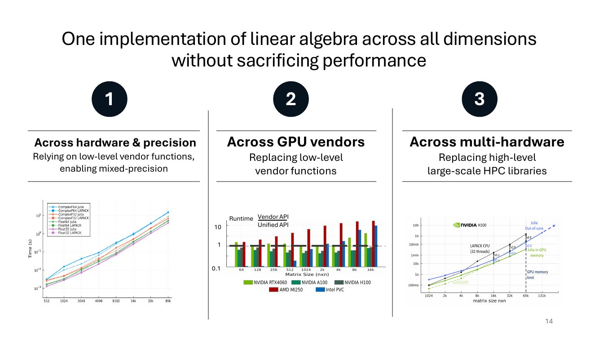
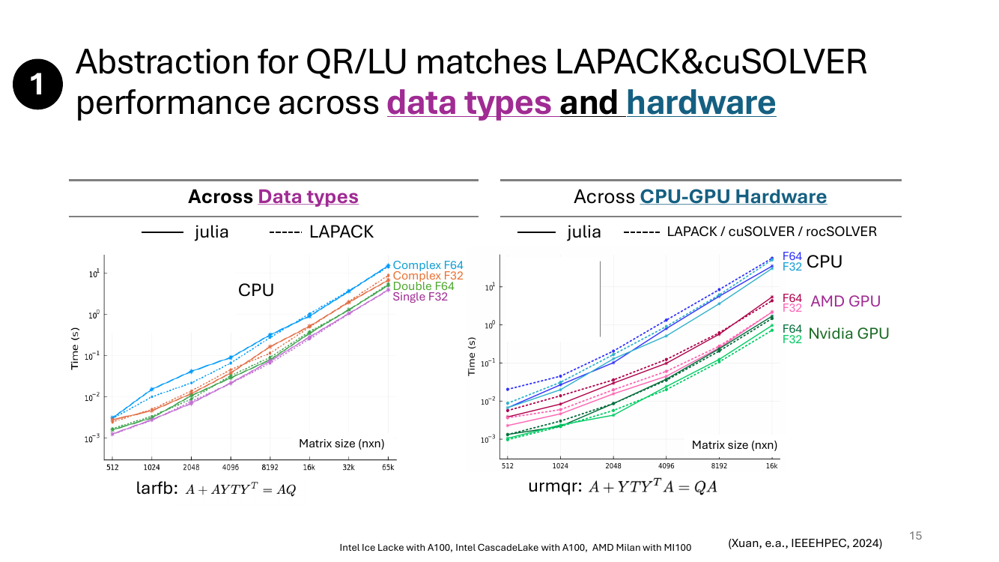
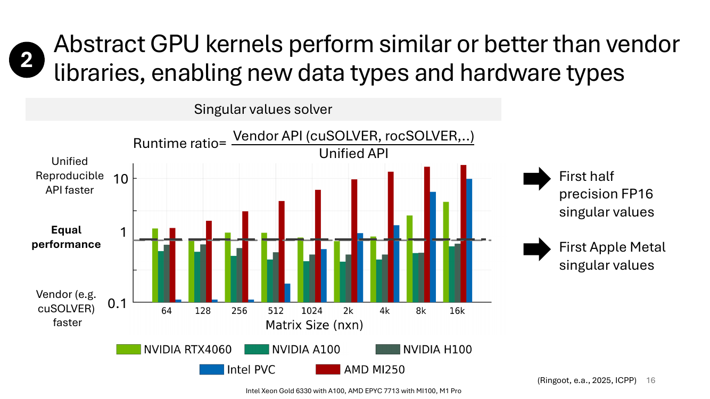
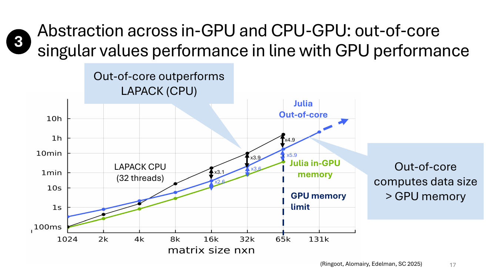
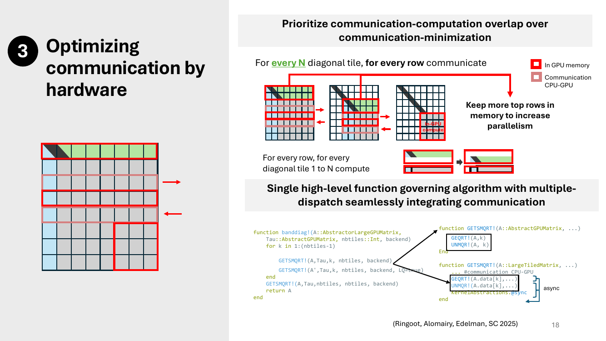
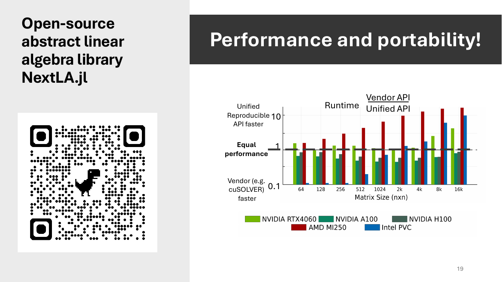

主题：Guest Lecture by Evelyne Ringoot (MIT, Julia Lab) —— Less Code, More Performance: Abstracting Singular Values Across Precision & Hardware
Lecture 18 是又一节客座课，讲者来自 MIT 的 Julia Lab。Lecture 17 上半场把 ScaLAPACK 这套"按 hardware 分仓"的传统线代库讲透了；这节课接着回答一个自然的下一步问题：能不能写一份代码就在 CPU / NVIDIA / AMD / Intel / Apple 上都跑得跟 vendor library 一样快？主线是：HPC linear algebra 软件碎片化的现状 → Julia 的 multiple dispatch + array/kernel abstractions 怎么把这层碎片抽象掉 → 三个落地的例子（QR/LU 跨硬件、SVD 跨 GPU 厂商、out-of-core 大矩阵 SVD）→ 最后开源库 NextLA.jl。Slide 1–3 是课程行政页（schedule + Code Server / GitHub repo 设置），slide 4–6 是讲者自我介绍 / 实验室介绍 / 标题页，按惯例都跳过；slide 20–22 是 "EXAMPLE 1/2/3" 占位页（讲者现场 demo），笔记里也跳过。

Slide 上的时间轴把过去 50 年的 HPC 线代库画成一条河，每出现一种新硬件就要冒出一个新库：
时间轴下方的色条是硬件标签：CPU → Vector → MPP/SMP → Micro → Micro/GPU。一种新硬件 ≈ 一个新库，老库的算法不能直接搬过来用。
Slide 上引的 Jack Dongarra（线代库的灵魂人物）2024 年原话："每来一种新硬件，我们都要花 3-4 年搞清楚怎么用——这是个极其重资本的算法重设计过程。"背后含义是：库重写的成本极高，但又必须重写，否则吃不到新硬件性能。
(1) 应用层库（比如 PyTorch）通常没法支持所有硬件——因为它要靠下层 vendor 的库，而某些硬件（比如 Apple Metal）的 vendor 库就不全。
(2) 大型 HPC 集群常常是异构的（一部分节点 NVIDIA GPU，一部分 AMD GPU，一部分 Intel CPU），所以跑同一个应用要同时维护好几套库。这就是讲者要解决的核心痛点。
Slide 中央的流程图就是当前 HPC 线代用户的真实选库流程，按数据规模 + 硬件分叉：
rocSOLVER，NVIDIA 用 cuSOLVER，Intel 用 oneMKL，Apple 基本没得用。用户要在程序里手写一堆 #ifdef CUDA / HIP / MKL，每次换硬件就改一次代码——非常痛苦。
Slide 右下列了几个候选：Julia、SYCL（Intel 主推的 C++ GPU 抽象）、Mojo（AI-first 语言）、OpenMP（带 GPU offload）。它们的共同野心：写一份代码 → 编译/分派到任意厂商的硬件。
过去抽象层（Python/wrappers）通常意味着性能损失——多一层就慢一层。讲者要回答的就是：能不能两个都要？
Slide 11 把后面要展开的关键 benchmark 提前露了一手——纵轴 = vendor API runtime / unified API runtime，横轴 = 矩阵规模。NVIDIA RTX4060/A100/H100、Intel PVC、AMD MI250 全跑下来，比值大致都贴在 1（equal performance）这条线上，AMD MI250 上甚至 unified 还更快。抽象层并没有以性能为代价。这是整节课的中心结论。

讲者把 Julia 能做"一份代码跨硬件"的功劳归到三个语言层面的特性，分三栏列出。
Julia 的核心机制：函数没有"绑定的类型"，而是根据所有参数的类型组合在编译期挑一个最特化的方法。Slide 上画的是一群 object，每个 object 配几条 method 箭头，最后汇到 generic function。
实际意义：当你写 matmul(A, B)，A、B 是 CuArray 还是 ROCArray 还是 Array{FP16}，dispatch 自动挑对应版本——不用 if-else，不用 wrapper 模板。第三方加一个新硬件（比如 Apple Metal）只要给自己的 array type 注册新方法，原有代码一行不改就能用。
(Bezanson et al., 2019 是 Julia 设计哲学论文。)
Julia 标准库里 AbstractArray 是接口，Array（CPU）、CuArray（NVIDIA）、ROCArray（AMD）、oneArray（Intel）、MtlArray（Apple）都是它的子类型。算子如 broadcast、reduction 写一份就在所有后端工作。
底层用BLAS GEMM当线代基石——CPU 端走 OpenBLAS / MKL，GPU 端走 cuBLAS / rocBLAS / oneMKL，Julia 的 * 运算符自动 dispatch 到对应的 GEMM。Slide 中间图列了从 algorithm → tile → tensor → linalg ops 的层次。(Besard et al., 2019.)
有时候没有现成的 BLAS 调用能用（比如要写自定义的 GPU kernel）。KernelAbstractions.jl 让你写一份 kernel，通过 LLVM 编译到 NVIDIA PTX / AMD ROCm / Intel SPIR-V / Apple Metal。Slide 右图：kernel 抽象层 → kernel generation → GPU compiler → GPU runtime。(Utkarsh 2023, Churavy 2023.)
多重派发负责"接到正确硬件"，array 抽象负责"高层算法不变"，kernel 抽象负责"低层算子也能跨硬件"。三层叠加，就有可能写一个 SVD 函数，在 5 种 GPU + CPU 上都跑得动。

奇异值分解 A = UΣVᵀ 把任意矩阵拆成正交基 + 缩放 + 正交基。它是 PCA、最小二乘伪逆、低秩近似、矩阵压缩的统一底层。近几年最热的应用：LLM 的 LoRA / 模型压缩，因为低秩 (rank-r) 近似就是只保留前 r 个奇异值。
Slide 右图：把 Transformer 权重做 SVD，得到 UΣVᵀ；推理时根据 query 类别（math / coding / VLM）挑不同的奇异值组合，相当于一个模型变身多个专家——本质就是 LoRA 的连续推广，全靠 SVD 当骨架。
SVD 既是经典线代的代表算法，又是当前 LLM 时代最热的算子之一。把 SVD 做成"跨硬件 + 跨精度"的抽象，等于直接惠及今天最多的 HPC + AI workload。

讲者把要展示的三个例子排成一行，每个回答一种"抽象的维度"。每张小图都是后面对应 slide 的结论预告：
关键词："without sacrificing performance"——三个例子都拿 vendor library 当对照基准。

Slide 底部的两个公式是 LAPACK 命名约定下的 BLAS-3 操作：
两者都属于块 Householder 反射——把若干个 Householder 向量 Y 和上三角块 T 合成一个紧凑反射，作用到 A 的左/右。这是现代 QR 分解里最吃 BLAS-3 的 kernel，也是 LU 分解的常用形态。
横轴矩阵规模 512–65k，纵轴时间。Julia（实线）和 LAPACK（虚线）的曲线两两贴在一起，covering：Complex F64/F32（双精度复/单精度复）、Float64/Float32。一份 Julia 实现，对所有 4 种精度都跑得跟 LAPACK 一样快。
同一份 Julia 代码 vs LAPACK (CPU) / cuSOLVER (NVIDIA) / rocSOLVER (AMD)，跑在 Intel Ice Lake (CPU)、A100 (NVIDIA)、CascadeLake+MI100 (AMD) 这三套机器上。Julia 的实线和各家 vendor 的虚线再次重合——不用 #ifdef 切代码，不用调用不同 API，dispatch 自动挑 backend。
这是"在 vendor 函数上面套 thin abstraction"的版本：底层还是调 cuSOLVER / rocSOLVER，Julia 只负责把 high-level QR 步骤组合好。这是抽象的最低门槛——保留 vendor 库、只统一接口——但已经足够展示 dispatch 没有性能损失。
(Xuan et al., IEEEHPEC 2024.)

Example 1 还在调 cuSOLVER；Example 2 把 vendor 的 SVD kernel 整个换成 Julia + KernelAbstractions 写的统一 kernel。
纵轴是 runtime ratio = vendor API / unified API。>1 表示统一 API 更快，<1 表示 vendor 更快，=1 表示打平。横轴是矩阵规模 64 → 16k。五条柱子分别是：NVIDIA RTX4060、A100、H100、Intel PVC、AMD MI250。
结论：unified kernel 整体跟 vendor 持平或更快。
(Ringoot et al., 2025, ICPP.)

当矩阵大到塞不进单张 GPU 的显存（H100 也就 80GB），传统做法要么换到 CPU，要么调用复杂的多卡 / CPU-GPU 混合库（PLASMA/MAGMA/SLATE）。讲者证明：用同一套抽象，可以做 out-of-core——矩阵分块在 host 内存，按需流到 GPU 算。
纵轴时间（log，100ms → 10h），横轴矩阵规模 1k → 131k。三条曲线：
这相当于同一套抽象层把 PLASMA/MAGMA/SLATE 那一层（high-level HPC 库）也替代掉了。前提是 multi-dispatch + array abstraction 能自动把数据搬运、kernel 调用、同步缝合起来——具体怎么做到的，slide 18 给代码。
(Ringoot, Alomairy, Edelman, SC 2025.)

传统的 communication-avoiding 算法目标是"少传数据"。这里反过来——多传也行，只要能和计算重叠就不增 wall time。具体做法（slide 上半部分图）：把矩阵切成 tile，对每一个对角块（diagonal tile），每一行都做一次 GPU↔CPU 的传输；红框 = 当前在 GPU 显存里的 tile，淡红 = 正在传的 tile。
"Keep more top rows in memory to increase parallelism"——把上方还要重复用的几行多留一会儿在 GPU 显存里，避免反复来回拉。这是经典的 look-ahead 策略，但通过 dispatch 自动实现。
Slide 下半部分的代码就是 Julia multi-dispatch 在异构 SVD 里发挥作用的现场。注意同一个函数名 GETSMQRT! 在两个不同 matrix 类型上有两套 method：在普通 GPU array 上就是纯 GPU kernel；在 LargeTiledMatrix 上就自动插入 CPU↔GPU 通信。算法本身的代码（banddiag!）不需要改。
function banddiag!(A::AbstractorLargeGPUMatrix,
Tau::AbstractGPUMatrix, nbtiles::Int, backend)banddiag!——把矩阵 A 化成带状双对角的 QR 步骤（SVD 的中间步骤）。注意它的两个核心参数都是抽象类型：AbstractorLargeGPUMatrix 和 AbstractGPUMatrix。这意味着 backend 是 NVIDIA 还是 AMD 还是 Apple，这个函数都能接。nbtiles 是把矩阵切成多少个 tile，backend 是 KernelAbstractions 用的硬件 backend 标记。
for k in 1:(nbtiles-1)
GETSMQRT!(A, Tau, k, nbtiles, backend)
GETSMQRT!(A', Tau, k, nbtiles, backend, LQ=true)
end
GETSMQRT!(A, Tau, nbtiles, nbtiles, backend)
return A
endGETSMQRT! ——这是关键：不管你的 A 是 in-GPU array 还是分块在 host 的 LargeTiledMatrix，这一行代码字面上一模一样。
function GETSMQRT!(A::AbstractGPUMatrix, ...)
GEQRT!(A, k)
UNMQR!(A, k)
endGEQRT! 算 Householder 反射（QR-tiled 形式），UNMQR! 把这个反射作用到剩余 tile。两个都是 GPU 上的 kernel，没有任何通信代码。
function GETSMQRT!(A::LargeTiledMatrix, ...)
... # communication CPU-GPU
GEQRT!(A.data[k], ...)
UNMQR!(A.data[k], ...)
kernelAbstractions.@sync
end # asyncA.data[k] 这一块 tile 从 host 内存拷到 GPU，再调相同的 GEQRT!/UNMQR! kernel，最后用 kernelAbstractions.@sync 等异步操作完成。整段还会被外层 async 包起来，让多 tile 的传输和计算重叠（呼应 slide 上半的"通信-计算重叠"思想）。
banddiag!）字面上写的是 GETSMQRT!(A, ...)，到底走纯 GPU 版本还是带通信的 out-of-core 版本，完全由 A 的类型决定。换句话说，"是否要 CPU↔GPU 通信"被推到类型系统里，算法代码无感。这就是讲者强调的"single high-level function with multiple-dispatch seamlessly integrating communication"。
if (out_of_core) { copy_h2d; compute; copy_d2h; } 这种 boilerplate。Julia 用 multiple dispatch 把这些写到类型上而不是算法逻辑里。结果：算法代码 ≈ pseudocode，通信代码作为 method 重载进来——这就是"less code, more performance"那一句口号的兑现。

讲者把这一整套抽象 + 三个例子的实现打包成开源 Julia 库 NextLA.jl（slide 左栏的 QR code 指向 GitHub repo）。它是讲者博士论文的产物，定位是"下一代 LAPACK"——一份代码、跨厂商、跨精度。
Slide 11 的"剧透 chart"在这里以正式结论出现：vendor API / unified API runtime 比值，五种硬件（NVIDIA RTX4060、A100、H100、Intel PVC、AMD MI250）从 64 到 16k 矩阵规模——绝大多数比值都在 0.4–10，集中在 1 附近，AMD MI250 上 unified 反而更快。
"Performance and portability!"——开头 slide 10 提出"能不能两个都要？"的疑问，整节课的回答是：用 Julia 的 multiple dispatch + array abstraction + kernel abstraction，把硬件碎片化吞进类型系统，可以。